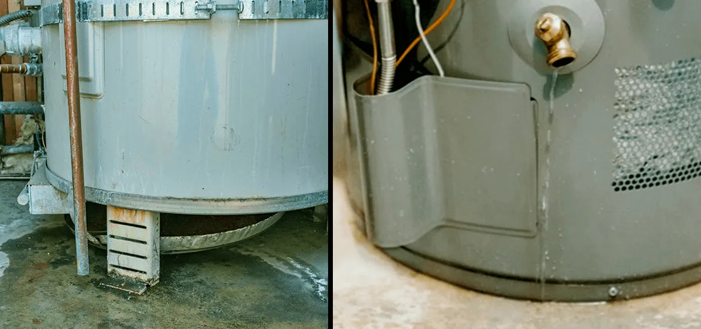

Water Heater Leaking? How To Fix It In 5 Easy Steps

Do you have a faulty water heater at your home? If you are unnoticing the small issues in your water heater, you are making mistakes. Call the water heater repairers of EZ Heat and Air. The team of specialized experts offers commercial and residential services to the areas like Riverside, Orange County, and all. They offer multiple services at a reasonable cost with guaranteed satisfaction.
The emergency water heater leakage causes the biggest headache. If the water heater leaks are not repaired quickly, they can create another biggest mess. Nothing is worse than detecting a puddle of standing water around the water heater.
If you don't want to put much money on this, you should control the situation from the initial days. Fixing the water heater leaking or water heater maintenance is a daunting task, and to make it successful, a person needs to hire the professional. If the damaged water heater is not repaired quickly, it can bring multiple other issues.
In this blog, we are sharing how the water heater works, the common reasons for water heater leakage, and how to fix them with the help of professional touch. To prevent this scenario, you need to call a professional for water tank leak repair.
How does a water heater work?
To dive deeply into the consequences of a leaky water heater and water heater heating element replacement, you should understand what the water heater means and how it works. So, the cold water enters the tank through the inlet pipes, and then a dip tube brings the cold water down and takes it to the bottom of the tank. After this, the water will be heated.
The electric water heater comes with the 2 most important electrical elements, one on the top and the other on the bottom. Do you have the gas water heater? Different types of water heaters have different work conditions and signs of water leakage.
So, in the next section, we share the causes of water leakage in the water heater. If you face any of the causes in your scenario and want to fix water heater leak, the EZ Heat and Air team will be there!
Causes of water heater leakage
Loose connection of pipe:
if any connection of the pipe is loose and connected to the water heater or valve, it might be the reason for water heater leakage. Tighten up the fixture but if it is still not working, hire the repairing team and replace the hot water heater leaking from overflow pipe.
Drain valve & TP valve:
The faulty T& P valve with a bad drain valve also brings problems. If the drain valve is loose and broken, then the chances of water leakage will be higher. If the situation is ignored for a long time, the valve connection can break, and water could seep out in the worst conditions.
High water pressure:
If the temperature of your water heater is high, the T & P valve will start releasing water. Along with that, over time, the minerals of the water become harsh. As the day goes b aynd the water heater system of your home gets older, it starts deteriorating. It causes cracks in the interior supply tank and increases the chances of bursting out the water.
Crack in water heater:
When you give constant pressure to the water heater, it can cause cracks. Over time, it can break the surface over time. Hard water also causes cracks in the tank; ultimately, you need to replace the hot water pipe leaking with the new one.
If you are a beginner, you might know the causes of water leakage in your heater. But what to do when your water heater is leaking? As a novice, you might be panicked and confused about what to do next? So, as per the EZ Heat and Air process here, we share the best 5 easy steps to fix it up as soon as possible.
The 5 easy steps to fix the water heater leakage
Verify the source of the leak:
To fix the drain water heater sediment problem for a long time, you first have to verify the source of the problem. There are many sources of water leakage in your space, so make sure the water leaking out is from the water heater.
You should investigate whether the moisture is a leak or what? The water heater is hot, so you can try to detect this by wiping down and drying out the water heater. After that, take a close look at your water heater and look closely at its exterior. If you still feel that the moisture is developing on the surface, it is due to the water leakage.
Shut off the power:
You should shut off the power if you see a leak. Don't ever try to leave the water heater turned on. If you have an electric water heater, you should find the circuit breaker and flip the power off. If you have a gas water heater, you should shut off the valve from the tank.
Shut the cold water supply:
Now it's the time to move to the next step and turn off the cold water supply too. Stop the flow of cold water supply to the water heater. Mostly there are two pipes connected to your water heater on the top of the tank.
Most of the water heaters shut off the valve on the inlet pipe. The cold inlet pipe supplies the cold water to the tank, and the outlet pipe transports the hot water into your home. Mostly the different pipes are colored in different colors. If it's not in your case, then touch it to detect it.
The source of the water tank:
Once you shut off the power, it's time to find the source of leakage. The EZ Heat and Air team will visit and go through each water heater component. With their help, you can quickly troubleshoot the sediment in hot water heater problem and repair it.
Try to identify where the water build-up is and how to recover it. They will surely troubleshoot the problem as soon as possible. The water leakage can be produced through the top and bottom of the tank or even from the sides. So, be aware of these.
Clean it & call a water heater repairer:
No matter where the leakage is initially, you can clean the area and call a water heater repaired. The buildup of sediment in water heaters can cause accidents and build molds. Clean it if you don't want to harm your valuable and structural damage as soon as possible. Call the water heater repairer team of EZ Heat and Air. The professional and specialized team will be there.
By following the top 5 steps, you can eliminate any kind of water leakage and understands why does a hot water heater leak. But as a homeowner, you should also be aware of the tips on preventing water heater leakage. Do you want to reduce the stress of going through unwanted water leakage? If you are, you should follow some basic tips for repairing a water heater.
The best tip to prevent this condition is to maintain the water heat tank yearly. A yearly checkup of water heater repair can avoid expensive repairs. This is the best solution to deal with the inconvenience. We share a few tips to protect your water heater from these conditions.
Things to do to prevent water heater leaks:
Thermostat test:
Before making any changes to your water heater, check whether your water heater's thermostat is in the right condition. It should be functioning properly; otherwise gets affected.
Consider the flue pipe:
In case you have the gas water heater, the water heater repairer will come and determine the flue pipe. They will come and inspect for holes and cracks.
Check T & P valve:
Certain safety features evaluate that T & P valve should function properly. If you don't want to risk your family, you should ask the repairer to check these.
Adjust the pipes:
It is also required to connect the pipes and adjust them regularly. Regular maintenance is needed to ensure all the pipes are connected securely and tightly.
Examine the drain valve:
In the next step, you should regularly check the drain valve and rods. If necessary, you can make a replacement. The build-up of sediments also lowers the efficiency of the water heater. So, make sure you have cleaned it properly for a regular period.
Similarly, some more options help you keep away from these conditions.
When it comes to the traditional water heater system, it mostly stays for long hours. But currently, the most efficient water heater tank leak and mean serious damage. If you ignore the leak for a long time, it can impact your personal property. This blog discovered everything about the leaky water heater and the consequences, along with electric water heater coil replacement.